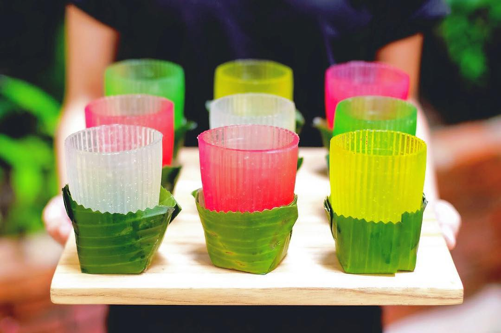

PELAKSAAN HASIL PENELITIAN 
3.1 Hasil Penelitian
3.1.1 Percobaan Pertama
Pada hari Selasa, 15 November 2022, tepatnya pada pukul 16.00, peneliti melakukan percobaan pertama dalam membuat gelas agar-agar.
Peneliti melakukan percobaan di salah satu rumah anggota.

3.1.2 Alat dan Bahan
Alat yang digunakan untuk percobaan:
- Cetakan Gelas
- Panci
- Pisau
- Sodet
- Mangkuk
- Sendok
Bahan yang digunakan untuk percobaan:
- Bubuk agar-agar
- Air perasaan jeruk
- Air mineral

3.1.3 Langkah Kerja
- Menyiapkan alat dan bahan yang dibutuhkan.
- Memasukkan dan merebus air dan bubuk agar-agar di dalam panci.
- Menambahkan perasan jeruk nipis ke dalam cairan.
- Memasukkan cairan yang sudah direbus ke dalam cetakan, lalu memasukkannya ke lemari es
- Mengeluarkan gelas agar-agar yang sudah mengeras dari cetakan.
- Gelas agar-agar siap digunakan dan dikonsumsi.
Work Steps:
- Preparing the tools and materials.
- Boiling the water and agar-agar powder in the pan.
- Adding lime juice into the agar-agar mixture.
- Pouring the mixture into the mold and letting it cool in the chiller.
- Taking out the agar-agar from the mold when hardened.
- Finally, the agar-agar glass is ready to be used.
Hal pertama yang peneliti lakukan dalam melakukan penelitian terhadap gelas agar-agar ini adalah membuat
agar-agar. Peneliti menggunakan bubuk agar-agar, perasan jeruk nipis, dan air hangat yang kemudian kami
dinginkan di lemari es ramah lingkungan yang dibuat kelompok peneliti lainnya. Setelah satu jam lebih,
peneliti mengeluarkan agar-agar dari lemari es tersebut. Beberapa anggota dari tim peneliti mencobanya dan
berdasarkan analisa, agar-agar yang dibuat mengandung jeruk nipis yang berlebihan tetapi tekstur agar-agarnya
sudah benar.
Selanjutnya kami melakukan percobaan kedua dengan membuat agar-agar kemudian mencetaknya menjadi bentuk gelas.
Cetakan yang peneliti gunakan berbentuk seperti shot glass. Para peneliti mencari tahu terkait kemampuan gelas
agar-agar dalam menampung cairan dan juga daya tahan pada gelas agar-agar. Para peneliti mencoba mengisi gelas
agar-agar dengan air yang memiliki suhu yang berbeda-beda, yaitu suhu ruangan, dingin, dan juga panas. Hasilnya
adalah gelas mampu menampung ketiga suhu air dengan baik. Setelah meneliti kemampuan gelas dalam menampung air
dengan suhu yang berbeda-beda, peneliti melanjutkan penelitian untuk menyempurnakan produk dan mencari solusi
untuk masalah-masalah yang dialami gelas agar-agar.

3.2 Alternatif Penyelesaian Masalah
Masalah yang kami alami selama penelitian ini adalah hasil akhir gelas pada salah satu percobaan yang tidak kuat
menampung cairan karena air yang dipakai dalam proses pembuatan gelas terlalu banyak. Maka, alternatif penyelesaian
dari masalah pada percobaan tersebut adalah dengan mengurangi air yang digunakan.
Selain itu, masalah kami yang kedua adalah gelas agar-agar mudah kotor jika diletakkan dimanapun ataupun dipegang
yang membuatnya kurang aman untuk dikonsumsi. Maka, alternatif penyelesaian dari masalah tersebut adalah membuat atau
menggunakan alas untuk menjaga kebersihannya. Salah satu contoh untuk alasnya adalah menggunakan daun pisang, hal ini
juga dapat membantu membuat gelas tidak terlalu licin saat dipegang.

Gambar gelas agar-agar dengan daun pisang
Saat percobaan-percobaan awal, gelas ini juga mudah rusak, hal ini dikarenakan konsistensi dan tekstur agar-agar yang licin
saat digenggam. Salah satu solusi yang dapat dilakukan yaitu dengan menggunakan semacam pembungkus berupa daun pisang yang
nantinya akan digunakan untuk membungkus bagian tengah kebawah dari gelas agar-agar sehingga dapat mengurangi kelicinan dan
dapat dipegang dengan lebih nyaman.
3.3 Perbandingan Antara Data Primer dari Lapangan dengan Data dari Pustaka (Data Sekunder)
Data primer merupakan data yang langsung dikumpulkan oleh orang yang membutuhkan data tersebut atau peneliti. Data primer
yang digunakan dalam penelitian ini berupa percobaan gelas agar agar yang diperoleh dari eksperimen penelitian. Pada percobaan
tersebut, peneliti menguji kekuatan hasil gelas agar-agar dengan memasukkan air dengan suhu yang berbeda-beda yakni, panas,
dingin, dan suhu ruangan.
Data sekunder merupakan data yang dikumpulkan secara tidak langsung oleh orang yang membutuhkan atau peneliti. Data primer
akan dibandingkan dengan data sekunder yang berupa data yang diambil internet.
3.4 Pendapat Peneliti Mengenai Pemecahan Masalah
Setelah mempelajari semua solusi dan alternatif penyelesaian dari masalah-masalah yang peneliti alami, dapat disimpulkan bahwa
alternatif-alternatif tersebut memberikan hasil yang memuaskan dan jauh lebih baik dari percobaan-percobaan awal. Pada percobaan
pertama, peneliti menggunakan air sebanyak 800cc. Maka setelah melalui proses evaluasi dan pertimbangan mengenai alternatif dari
masalah ini yaitu dengan mengurangi penggunaan air, pada percobaan kedua, para peneliti mengurangi penggunaan air menjadi 400 cc
dan akhirnya memberikan hasil yang memuaskan.
Kemudian untuk menindaklanjuti masalah kebersihan dari gelas agar-agar, peneliti mencoba menggunakan daun pisang dan piring sebagai
alasnya sesuai dengan alternatif di atas. Hasilnya, gelas agar-agar jadi lebih tidak licin untuk diangkat jika digenggam dari bagian
yang dibungkus dengan daun dan gelas bisa diletakkan dimana saja tanpa harus mengkhawatirkan kebersihan.